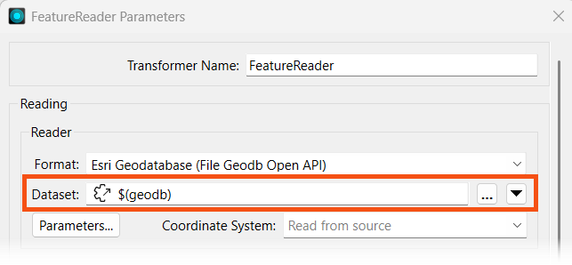
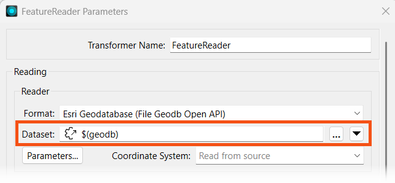After completing this lesson, you'll be able to:
From a Workspace App interface, users can input geometry into workspaces for processing using parameters. Users can upload datasets through a File/Folder/URL parameter that the workspace processes, or you can configure a geometry parameter to accept input in GeoJSON or XML format.
With a File/Folder/URL parameter, your workspace must use a Reader or FeatureReader to read the input data before transforming it. In most scenarios, you will clip, join, or merge another dataset to the user's data.
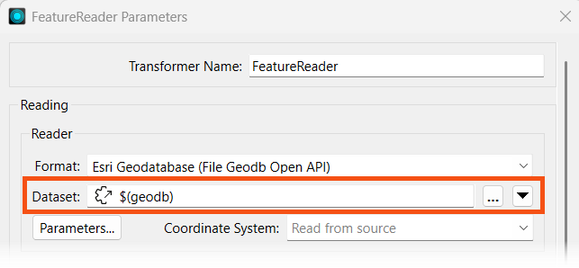
For more training on inputting source datasets to workspaces through parameters, please see the Input Source Data at Runtime lesson in Manage FME Flow Data and Connections.
If you have the user input geometry through a Geometry parameter, the easiest method to transform the GeoJSON or XML into a geometric feature is to use a GeometryReplacer.
 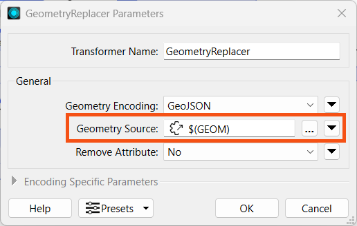
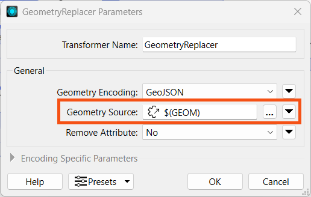
For more training on creating the Geometry parameter to use on FME Flow, please see the Get Geometry Input from Users lesson in Build Self-Serve Workflows with Parameters.
When you run a workspace with a Geometry parameter, the parameter enables an interactive web map on FME Flow that allows you to draw a point, line, or area of interest to input to a workspace. You click the map icon from the Geometry parameter to open the web map.
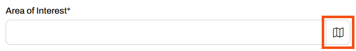
From the web map, you will only be able to input the geometry types set up in the user parameter in the workspace, which you select from the top, and then draw or choose the location on the map.

You may collapse the pop-up map by clicking 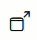 and expand the menu in the inline map for the option to pop it out into its own window.
for the option to pop it out into its own window.

For more information on the Geometry Parameter and setting custom basemaps for the web map in FME Flow, please see Using the Geometry Parameter.
Exercise
Jennifer is working on another self-serve web app, one that presents the user with transit data to download. She has configured her workspace with parameters that allow the end-user to select which layers to download, the coordinate system, and the format. She also would like to clip the data to a geographical area set by the user; she will use a Geometry parameter to accomplish this. She will then deploy her workspace on FME Flow and create an app that end-users can access to download their data.
Follow along with Jennifer's steps as she deploys her self-serve workspace as an app.
Jennifer opens her workspace, TransitDataDistribution.fmw (C:\FMEData\Workspaces\CreateDataIntegrationApps\TransitDataDistribution.fmw) in FME Workbench.
The workspace begins by creating geometry and reprojecting it. The FeatureReader reads in the transit data from Transit.gdb, then a Clipper clips it to the input geometry. If the output format is OGC KML, the workspace styles each feature type before writing it to the file.

Jennifer right-clicks User Parameters in the Navigator and selects Manage User Parameters. There are already three user parameters for the workspace. The first prompt asks the user to choose which transit data layers they want to download. The second prompts the user for an output format for the data, and the last one sets the coordinate system of the output data.
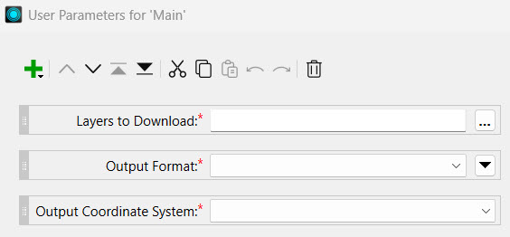
Jennife clicks on each parameter to see the configuration options. Each parameter is a Choice parameter and has appropriate options for the data.
Jennifer creates a Geometry parameter by clicking the green plus icon and selecting Geometry from the list of parameter types.
She configures the following settings:
The initial bounds for the map display surround Vancouver, BC, to match the transit data.
On the left panel, Jennifer re-orders the parameters so the Area of Interest parameter is second in the list, after Layers to Download.

Jennifer clicks OK to close the parameter manager.
The GeometryReplacer transformer is incomplete, as it requires a reference to a geometry source. This source will be the Geometry parameter Jennifer just created. She double-clicks the GeometryReplacer to open its parameters. She clicks the down arrow for the Geometry Source and selects the GEOM parameter under User Parameters.
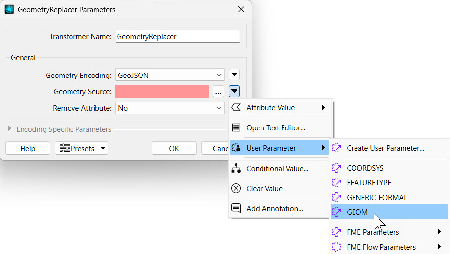
She clicks OK to close the GeometryReplacer Parameters.
Jennifer clicks Run in the top toolbar to test her workspace. She sees prompts for each of the four parameters.
For Layers to Download, she selects "Skytrain Lines" and "Skytrain Stations."
For the Area of Interest parameter, Jennifer copies and pastes the following JSON into the parameter:
{"type":"Polygon","coordinates":[[[-123.116202,49.275826],[-123.116202,49.280585],[-123.10479,49.280585],[-123.10479,49.275826],[-123.116202,49.275826]]]}For Output Format, she selects Esri Shapefile.
For Output Coordinate System, she selects WGS84 Lat/Longs [LL-WGS84].
Jennifer deselects Save As Parameter Default Values to keep the default values blank for the parameters. Then she clicks Run.
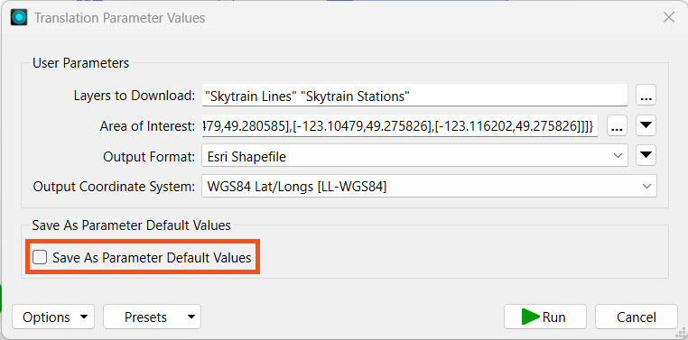
After the translation completes, Jennifer inspects the output data in C:\FMEData\Output to ensure that her workspace has written the correct layers in the proper format.
Now that her workspace is complete, Jennifer publishes it to FME Flow. She navigates to the workspace TransitDataDistribution.fmw and saves it in the Training repository. She registers the workspace with the Data Download, Data Streaming, and Job Submitter services.


On FME Flow, Jennifer opens the Create Workspace App page. She gives her new app a name, title, and description. She sets the Training repository, the TransitDataDistribution.fmw workspace, and the Data Download service.

Under Parameter Defaults, Jennifer sees the four parameters from her workspace, including the Area of Interest geometry parameter she just created. She does not alter any other settings and clicks Create.
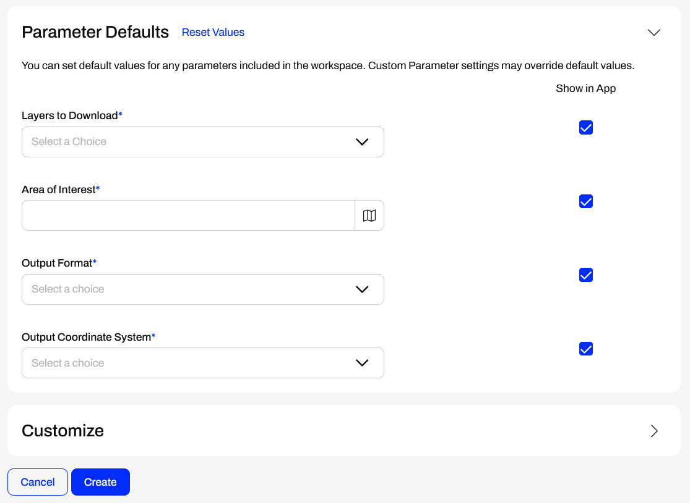
FME Flow creates the app and displays the URL to Jennifer. Jennifer clicks the URL to open the app in another tab.

On the app, Jennifer selects the transit layers she wishes to download. She clicks the map icon to open the interactive web map to select her Area of Interest. She chooses a rectangle, draws one on the map, and clicks Confirm to close the web map.
 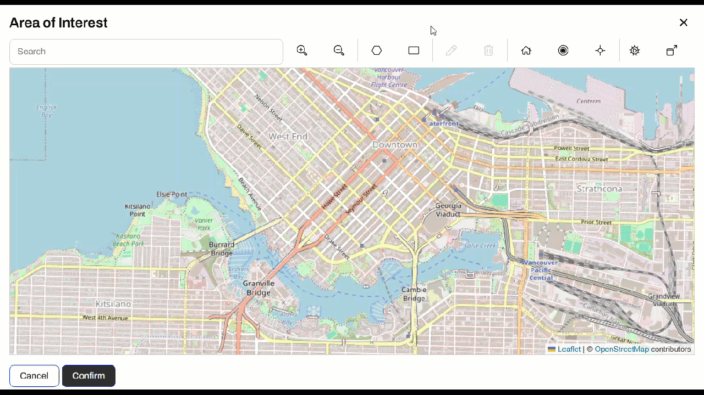
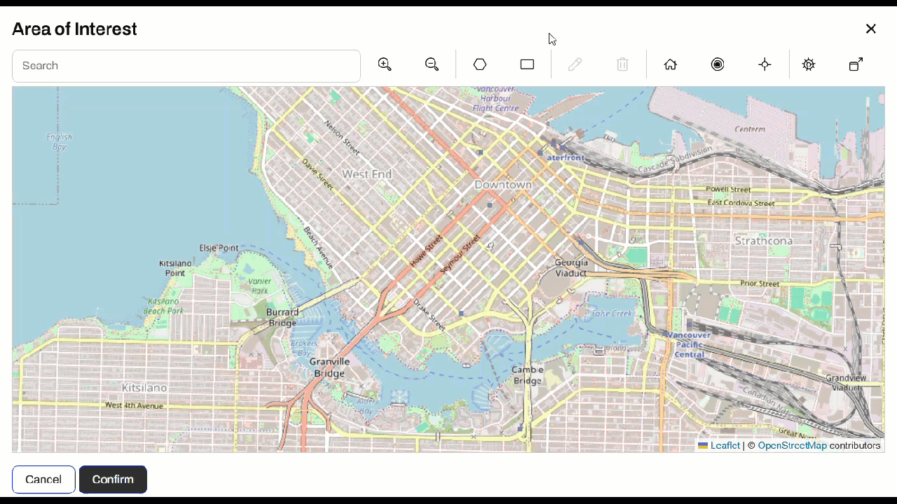
Jennifer selects an output format and coordinate system and clicks Run.

The app displays that the workspace is running and then presents Jennifer with the Data Download URL once the translation is complete.

Jennifer clicks the URL, downloads the data, and inspects it to confirm that FME set the proper area, layers, and coordinate system.
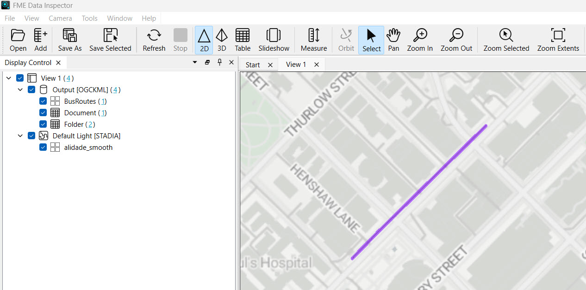
Jennifer has successfully built another self-serve web app, featuring the added functionality of clipping output data to a specific area of interest by linking geometry user input to the workspace.